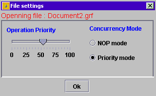

Back to the main page
Back to the main page
How to open a new graphical document ?
To open a graphical document you have to perform the folowing tasks:
- Push the open
 button from the standard toolbar menu or select the Open file menuitem from the appplication main menu.
button from the standard toolbar menu or select the Open file menuitem from the appplication main menu.
- Select the file from the openfile dialog
- Click to the Open button
The folowing userr settings dialog frame will be appear on the screen:

In this dialog you can select one of the concurrecny policy operation modes:
- NOP based concurrecy policy opeation mode [ For more explication see refferce: "Diploma thesis", section 5.2 ]
- Priority based concurrecy policy operation mode [ For more explication see refferce: "Diploma thesis", section 5.2 ]
The selected operation mode will use to solv the concurrecny conflicts in the case of the concurrency operations.
If you select the the Priority based operation you can choose a you prioriy ( which sholud be different from the other users priorities)
 For any observation please contact us lcsaszar.inf.ethz.ch.
For any observation please contact us lcsaszar.inf.ethz.ch.
Back to the main page